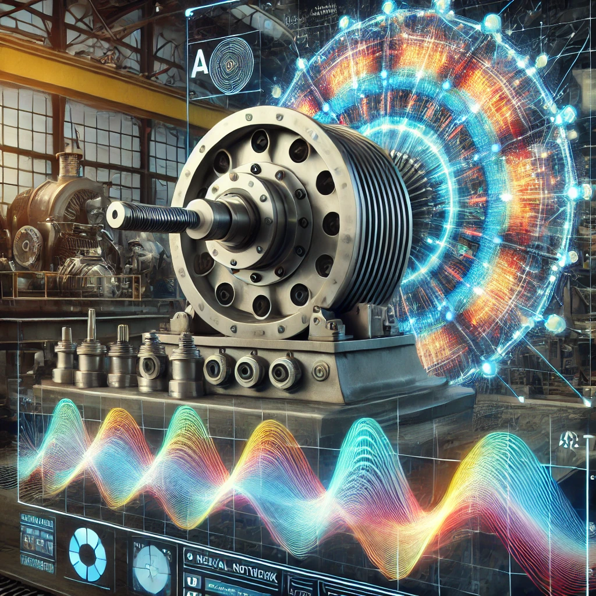

Featured Work
🤖 RestroBot: AI Chatbot for Future Restaurants
A smart RAG based virtual assistant for restaurants built with GPT-4 and advanced conversational AI, RestroBot handles reservations and orders with the efficiency of a machine and the courtesy of your best staff member.
- •Can handle multiple request from customer
- •Consistent and accurate service
- •Large Language Models (LLMs)
- •Tools: Python, PyTorch, LangChain, GPT-4 API, Pinecone, OpenAIEmbeddings, SQLite
⚙️ Rotatory Machinery Fault Detection
A machine learning model to detect mechanical faults in rotatory machines using the vibration signal generated by a rotatory machine for heavy industries.
- •98% accuracy in fault detection
- •Deployed on Machine Motoring Systems, LLC
- •Tools: Python, PyTorch, AWS, Pandas, Numpy, Matplotlib

📚 Student's Grade Predictor
An intelligent system that predicts student performance using machine learning algorithms and historical academic data.
- •Advanced prediction algorithms
- •Comprehensive data analysis
- •Tools: Python, Pandas, SQLite, Matplotlib, Numpy
📚 PDF Figure Caption Extractor
Python tool designed to automatically extract figures and their associated captions from PDF documents. Particularly useful for developing LLMs.
- •Automatically identifies figures, diagrams, and plots within PDF documents
- •Uses computer vision techniques to detect figure boundaries
- •Intelligently pairs figures with their corresponding captions
- •Maintains the relationship between figures and their descriptions
- •Tools: Python, Numpy, OpenCV, PIL (Python Imaging Library), Selenium, lxml